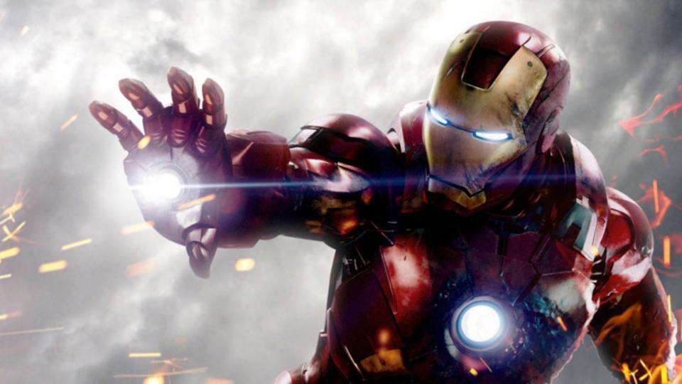
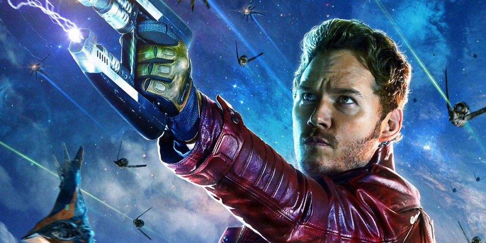
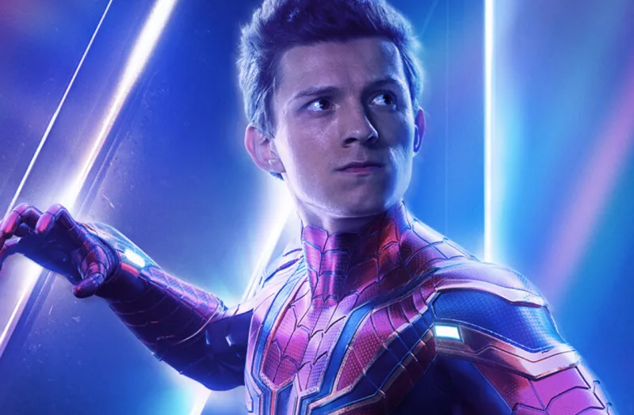
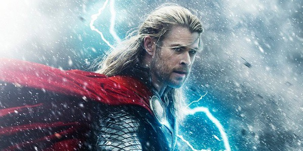

Iron man or known as Tony Stark continued his father Howard Stark’s weaponry business after his parents’ untimely deaths and flew it to even greater heights of innovation. While in Afghanistan to demonstrate a new missile for the U.S. military, Stark’s convoy came under fire by a terrorist group known as the Ten Rings and he was severely wounded. Taken prisoner by the group, Stark awoke in their headquarters to learn that shrapnel near his heart had nearly cost him his life, but swift action by scientist and fellow prisoner Ho Yinsen—who had inserted a powerful electromagnet in Stark’s chest—would prolong it temporarily.

Star Lord :
As Star-Lord, Quill utilizes several pieces of equipment, most likely gained during his time with the Ravagers, such as a mask-helmet that allows him to breathe in space. He also uses a unique double-barrel blaster pistol, boot thrusters for limited flight, and a starship he dubs the Milano. In addition, Quill sports multiple devices and tools that aid in his thievery.
Star-Lord himself is a fair hand-to-hand combatant, though he seems to prefer shooting to punching. He keeps himself in shape, though, and has been able to withstand certain degrees of physical abuse from his opponents. Though not of low intelligence, Quill possesses a clever mind that while useful in some situations, tends to get him into trouble more often than not.

Spiderman :
A bite from a spider somehow granted teenager Peter Parker its arachnid abilities and instead of using them for personal gain, he decided to help others with them. An orphan living with his aunt, May Parker, the boy chose to wear a mask while fighting crime so as not to burden her with his actions.
Calling himself Spider-Man and sporting a pair of web-shooting devices he’d constructed, Parker wound up in internet videos which attracted the attention of Tony Stark. The billionaire industrialist deduced Spider-Man’s secret identity and approached Parker at his and May’s home in Queens, New York with a request for aid from the hero in an upcoming confrontation with Captain America and a group of other rogue Avengers and associates. Parker was initially hesitant to even admit his secret career as Spider-Man, but the thrill of adventure and Stark’s talk of responsibility drew him in and he accepted the invitation, as well as a new, high-tech costume and web-shooters.

Thor :
Born 1500 years ago to Odin and Frigga, the king and queen of fabled Asgard, Thor grew into a mighty warrior and protector of his home and people. Thought to be rash and even reckless by his father, Thor nevertheless looked forward to the day of his ascension to the throne. But, his adoptive brother Loki schemed in private to ensure that day never arrived. He manipulated Thor into attacking the Frost Giants, legendary adversaries of the Asgardians and Loki’s people, and Odin—hoping to teach his son humility—divested Thor of his magic hammer Mjolnir and banished him to Midgard, the realm also known as Earth.
Alone and unable to return to Asgard, Thor met scientists Jane Foster and Erik Selvig in the midst of their investigation into strange activity near a small New Mexico town. While his brother struggled with the limitations of mortals on Earth, Loki worked to ensure his own seizure of the Asgardian throne and planned to allow the Frost Giant king—his real father—into Asgard to slay Odin in his sleep. Back on Earth, Thor sacrificed himself to save the town from destruction and in doing so, impressed Odin enough to restore him to full Asgardian power.

Thanos :
A native of the planet Titan, Thanos saw the danger his people were in from overpopulation and suggested a severe solution—the elimination of half the population, at random and without prejudice, in order to make life better for the planet as a whole. He was shunned as a madman, but his planet did indeed eventually die, lacking the resources needed to keep up with the demands.More than once, Thanos took a child from a galactic species he’d decimated and raised them as his own. Some of these children have been tutored in the arts of assassination and war, making them among the deadliest killers imaginable. Thanos has also given powerful artifacts to individuals who he believes will use them to spread the cause of death in certain important spots among the galaxies.
Thanos went on to have a great interest in acquiring the Infinity Stones, six objects of immense power scattered throughout the universe, and has had the Infinity Gauntlet built in order to harness their power.